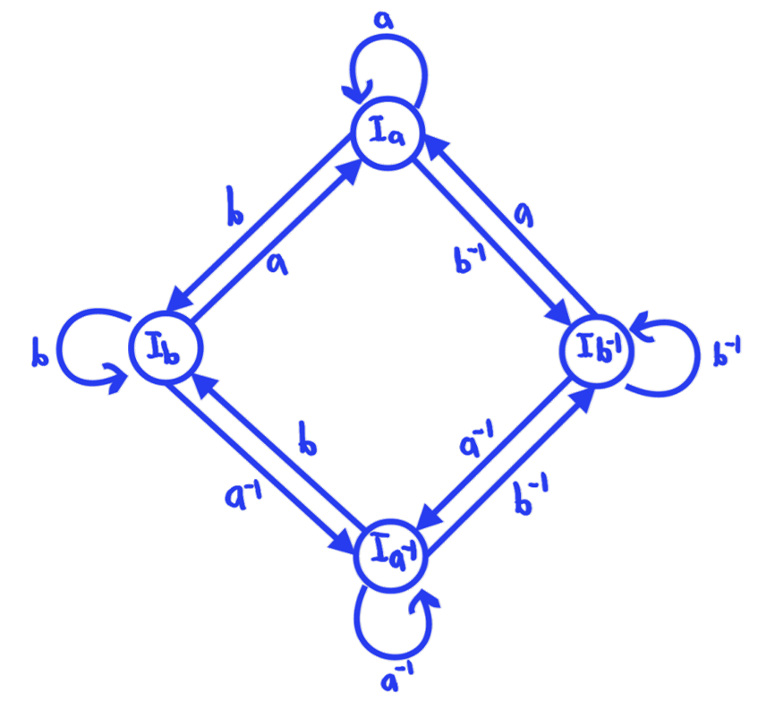
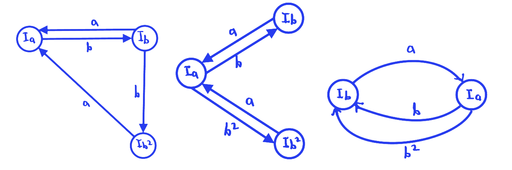
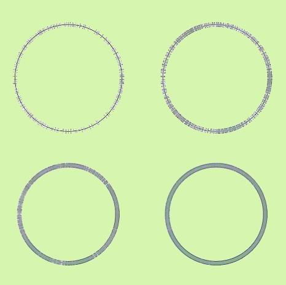

You may have ready my article The Ping Pong Lemma from a few months ago. This article is an update on what my group in the Texas Experimental Geometry Lab has done with the project over the past fall semester along with some more cool visuals of what we've been working on.
To summarize: our group is trying to determine whether a representation of a group in is faithful by using a method called ping pong. By finding intervals of which meet certain containment conditions, we can confidently state that the representation is faithful.
Our previous project focused on free groups exclusively, since that is the only type of group the Ping Pong Lemma would really work for. This past semester, we attempted to generalize the notion of ping pong to the set of groups with an automatic structure and design a new algorithm that works for them.
Automatic Structures
An automatic structure is a finite state automata whose paths describe exactly all of the reduced words in a particular group. For example, the following automata represents the free group :

By tracing paths along this graph, we get exactly the words in the free group on two generators. No path exists that will trace out a word which can be reduced in the group (ie. we will never have a generator next to its inverse resulting in cancellation).
Some groups may have multiple automatic structures such as :

Three possible automatic structures for a free product of cyclic groups with order 2 and 3.
In general, it is a difficult problem to find the automatic structure of a group given just its representation, so we worked with groups for which these structures were relatively easy to find.
Generalized Ping Pong
Avoiding the details of Uniformly Hyperbolic Finite-Valued SL(2,R)-Cocycles chapter 2, I will state the idea of generalized ping pong:
For a group with automatic structure and representation , if intervals of exist for each vertex of such that for all transitions by letter the containment holds, then has a kernel bounded by some finite .
This theorem is nice in the sense that we can say something about the faithfulness of representations for non-free groups but gives a slightly weaker result than the ping pong lemma itself (which says the representation has kernel 0). This forces us to add another step to the algorithm after finding valid intervals which computes this value and then checks a finite list of words to verify that the kernel is in fact 0.
Interval Searching
With generalized ping pong, we also lose the requirement of intervals needing to be connected and disjoint. This makes the searching process a bit easier to set up since we don't need to worry about intervals intersecting. Instead, we can just linearly expand intervals which do not contain the images required by the automatic structure and check containments at each step.

Linear search for (3,4,4)-triangle group intervals
Since it is possible that linear expansion by some flat epsilon value may accidentally overshoot where a valid interval needs to be, we are also working on a new image patching search technique which extends intervals by taking a union of the the interval and the images it needs to contain. This works because the intervals don't need to be connected so we don't need to linear expand into these images when we can just add a new component of the interval around them. The method is much slower however and requires a bit of debugging.
